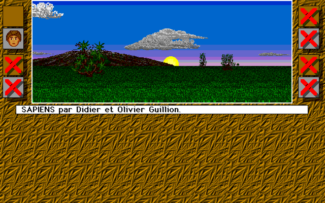

O grze
Jesteś Torganem, młodym łowcą z plemienia Pieds-Agiles. Przemierzasz rozległą dolinę w widoku z pierwszej osoby: góry, lasy, źródła, chmury i burze. Dzień zmienia się w noc, a głód, pragnienie i zmęczenie wyniszczają cię. Spotykasz wilki, niedźwiedzie, króliki i ludzi z innych plemion: wtedy trzeba walczyć, w widoku z boku, toporem, oszczepem lub gołymi rękami… albo rozmawiać, wymieniać się darami i zdobywać sojuszników.
Obtłukuj krzemień, by wykonać broń, zbieraj jagody i korzenie, opatruj rany, śpij przy ogniu. Tu spryt i dyplomacja często znaczą więcej niż siła.



Zadanie
Hognor, wódz twojego plemienia, wystawia cię na coraz trudniejsze próby:
- Przynieść żywność: plemię głodnieje.
- Zdobyć Eliksir Życia od Yeux-Malins, bo młodzi zjedli trujące jagody.
- Podjąć wyzwanie Bras-de-Roc: pokonać ich wodza i odebrać mu Kościany Topór.
- Odzyskać Święty Kostur skradziony przez Hyènes-Folles.
- I wreszcie… niech prawo siły wskaże nowego wodza.
Pieds-Agiles
Twoje plemię. Wódz: Hognor.
Yeux-Malins
Sprytni uzdrowiciele. Wódz: Sl-Oom.
Bras-de-Roc
Budzący grozę wojownicy. Wódz: Grungh.
Hyènes-Folles
Łupieżcy z południa. Wódz: Krok-G.
Sterowanie
Komputer
- Mysz
- Wybierz akcję w menu na dole (strzałki ▲▼ do przewijania), kliknij obraz, aby się rozejrzeć
- ← →
- Krajobraz: obrót · widok z boku: marsz
- ↑ ↓
- Krajobraz: przyspieszanie / zwalnianie · widok z boku: wstawanie / kucanie
- Spacja
- Krajobraz: mapa · widok z boku: cios
- Enter
- Zmiana broni (lub prawy przycisk myszy)
- Esc
- Wyjście z widoku (lub kliknięcie)
- Klawiatura num.
- Drugi gracz (8246, 1 cios, 3 broń)
Telefon
- Dotyk
- Jak kliknięcie myszą: cała gra obsługiwana jest z menu (Patrz › Krajobraz, by ruszyć na zwiad)
- Joystick
- Lewy pas: obrót, marsz do przodu (krajobraz), chodzenie (widok z boku)
- CIOS
- Widok z boku: cios · krajobraz: mapa
- BROŃ
- Widok z boku: zmiana broni
- WYJDŹ
- Wyjście z bieżącego krajobrazu lub widoku (dotknięcie obrazu też działa)
- MAPA
- Mapa w krajobrazie
Długa historia
- 1986 — Pierwsza wersja, napisana w asemblerze na Thomsony MO5 i TO7/8/9 oraz Amstrada CPC, potem przepisana w C na PC.
- 1987 — Bardziej kolorowa wersja na Atari ST.
- 1996 — Źródła w C wychodzą z pudeł: wersja na MacOS i Windows.
- 2017 — Sapiens staje się freeware.
- 2018 — Myriad publikuje kod źródłowy na licencji GNU GPL v3.
- Dziś — Port na PHP, do zagrania w przeglądarce.
100% PHP
Ta wersja to wierny port, funkcja po funkcji, źródeł w C z 2018 roku na PHP, oparty na frameworku JumPHP. Ten sam kod działa na komputerze (PHP + SDL2) i w przeglądarce (PHP skompilowany do WebAssembly). Sprite'y, dźwięki i teksty pochodzą z oryginalnej gry.
Kod źródłowy: github.com/davidnurdin/sapiensPhp · oryginalne źródła: strona Sapiens open source firmy Myriad.